CODE FOR IDENTIFYING CO-EVOLUTIONARY SECTORS IN HCV NS4B USING RoCA
Contents
- Setting up paths (of functions and data files required) and necessary parameters
- Loading biochemical domains
- Preprocessing the data
- Computing the number of significant eigenvectors, alpha
- Forming sectors using RoCA
- Forming sectors using PCA
- Computing correlation matrices
- Heat maps
- Comparison of PCA and RoCA sector sizes
- Location of sectors on primary structure
- Percentage overlap
- Statistics of RoCA sectors
- Biplots of eigenvectors
- NED calculation plot
- Statistical signficance of biochemical association of RoCA sectors
- Data for red spheres in protein crystal structure figures
Setting up paths (of functions and data files required) and necessary parameters
clear all;close all;clc % Adding paths of required functions and datafiles addpath functions addpath datafiles % Setting font type and size set(0,'DefaultAxesFontName','Arial') set(0,'DefaultTextFontName','Arial') set(0,'DefaultAxesFontSize',16) set(0,'DefaultTextFontSize',16) % Specifying the name of protein, and whether to run the shuffling code protein = 'NS4B'; run_shuffling = 0; %1 = yes, run the shuffling code, %0 = no, use saved data. run_stat_ind_test = 0; %1 = yes, run the statistical independence test code, %0 = no, use saved data.
Loading biochemical domains
biodomain = biochemical_domains(protein);
Preprocessing the data
load msa_ns4b
[B,Bcap,lambda,site_freq_no_mutation,true_indices,freq_bin,prev_aa,N,M,ls] = preprocessing_ns4b(msa);
Data statistics ----------------------------------------------------------------------------------- Percentage of conserved/problematic sites = 27.20. Number of sequences after data preprocessing, N = 675, Number of sites after data preprocessing, M = 190. Pearson correlation of 0.98 (P-value = 8.0e-145) is observed between entropy of MSA and that of binarized MSA.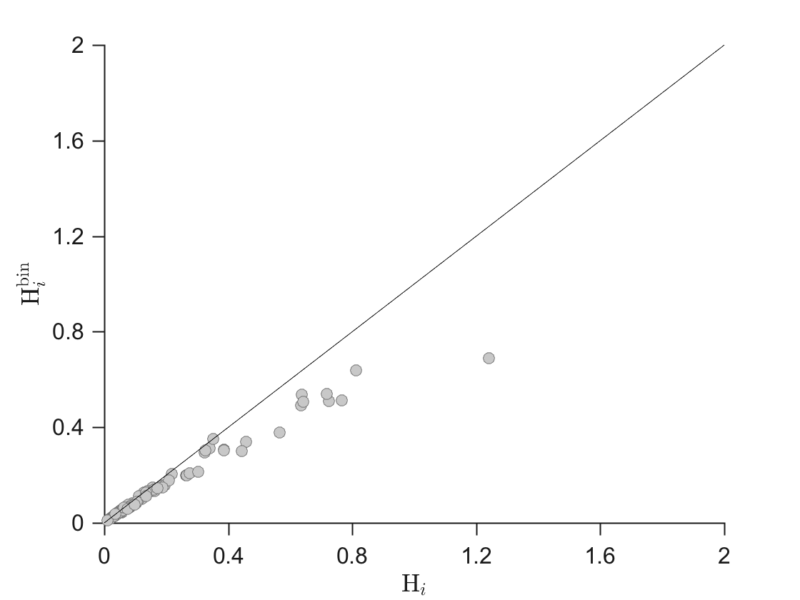
Computing the number of significant eigenvectors, alpha
if run_shuffling == 1 N_shuffles = 1e5; %Number of shuffles thresh = 5; %percentile to define threshold for significant positive and negative correlations [lambda_max_rnd,pos_thresh,neg_thresh] = ... computing_lambda_max_rnd(Bcap,N_shuffles,thresh); else load data_shuffling_ns4b end alpha = sum(lambda>lambda_max_rnd);
Forming sectors using RoCA
% Computing the sparsity threshold, gamma_k for Corr-ITSPCA gamma_k = computing_gamma_k(alpha,lambda,N,M); % Computing sparse principal components using Corr-ITSPCA PC_roca = CorrITSPCA(Bcap, gamma_k, alpha); % Forming sectors using RoCA [sec_eig_roca, sec_eig_roca_true, sec_eig_roca_incl_cs, length_sec_roca] = ... form_sectors_roca(PC_roca,alpha,site_freq_no_mutation,true_indices,ls); n_secs_roca = length(sec_eig_roca);
Forming sectors using PCA
[PC_pca, sec_eig_pca, sec_eig_pca_true, sec_eig_pca_incl_cs, length_sec_pca] = ... form_sectors_pca(Bcap,alpha,site_freq_no_mutation,true_indices,ls,pos_thresh,neg_thresh); n_secs_pca = length(sec_eig_pca); fprintf('\n-----------------------------------------------------------------------------------\n') fprintf('Number of sectors formed\n') fprintf('-----------------------------------------------------------------------------------\n') fprintf('RoCA method = %d\n',n_secs_roca) fprintf('PCA method = %d\n',n_secs_pca)
----------------------------------------------------------------------------------- Number of sectors formed ----------------------------------------------------------------------------------- RoCA method = 4 PCA method = 2
Computing correlation matrices
C = corrcoef(Bcap); %sample correlation matrix C_hat = compute_clean_C(Bcap,alpha,lambda); %cleaned standardized correlation matrix
Heat maps
heatmap_corr_matrix(C,'eastoutside','Sample correlation matrix') % Heat map of cleaned correlation matrix (Supplementary figures 1-6) per_sites_in_roca_sectors = heatmap_corr_matrix_cleaned(C_hat,sec_eig_roca,sec_eig_roca_incl_cs,n_secs_roca,ls,'RoCA'); per_sites_in_pca_sectors = heatmap_corr_matrix_cleaned(C_hat,sec_eig_pca,sec_eig_pca_incl_cs,n_secs_pca,ls,'PCA'); fprintf('\n-----------------------------------------------------------------------------------\n') fprintf('Total number of sites in inferred RoCA and PCA sectors\n') fprintf('-----------------------------------------------------------------------------------\n') fprintf('Percentage of sites in RoCA inferred sectors = %.2f\n',per_sites_in_roca_sectors) fprintf('Percentage of sites in PCA inferred sectors = %.2f\n',per_sites_in_pca_sectors)
----------------------------------------------------------------------------------- Total number of sites in inferred RoCA and PCA sectors ----------------------------------------------------------------------------------- Percentage of sites in RoCA inferred sectors = 50.57 Percentage of sites in PCA inferred sectors = 70.11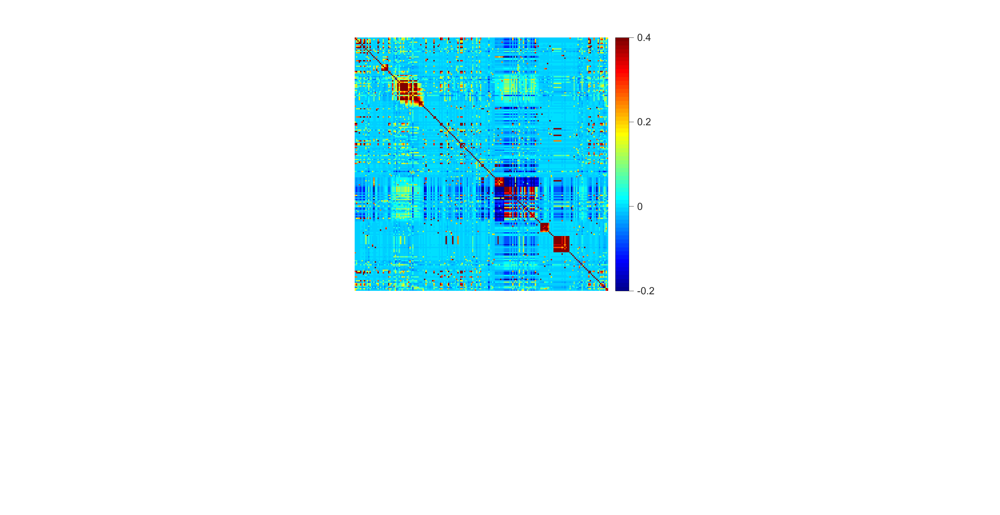 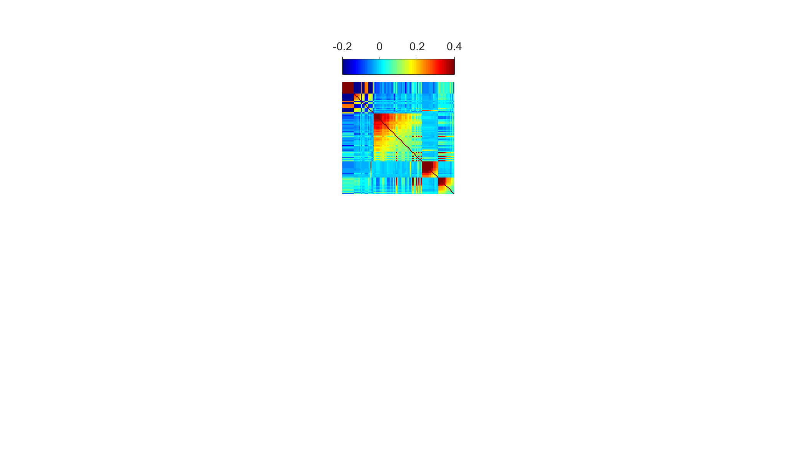 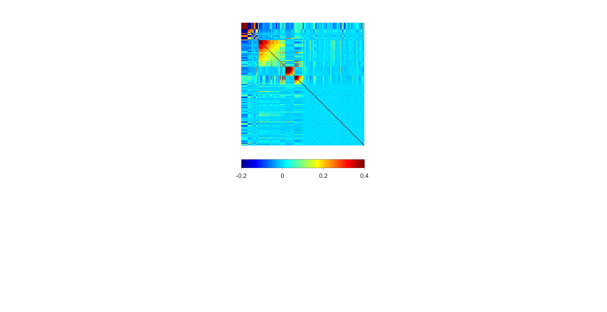 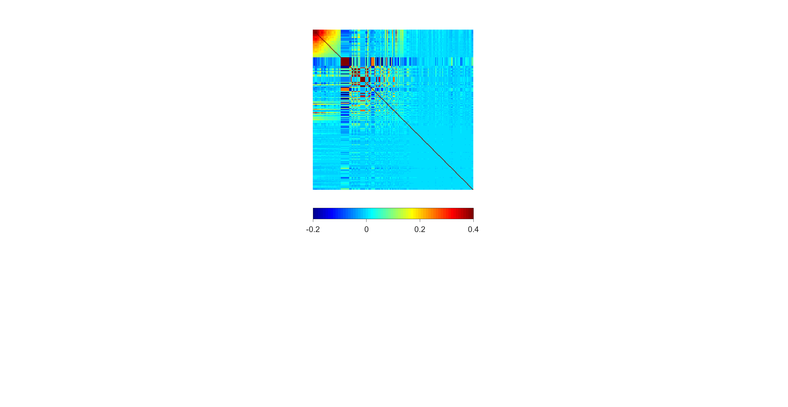
Comparison of PCA and RoCA sector sizes
% Supplementary figure
compare_size_sectors(sec_eig_roca_incl_cs,sec_eig_pca_incl_cs,alpha)
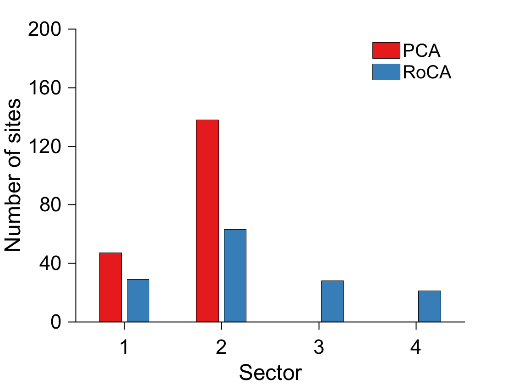 Location of sectors on primary structure
%(Supplementary figures 1-3)
location_secs_on_primary_structure_protein(sec_eig_roca,sec_eig_pca,true_indices,freq_bin,M)
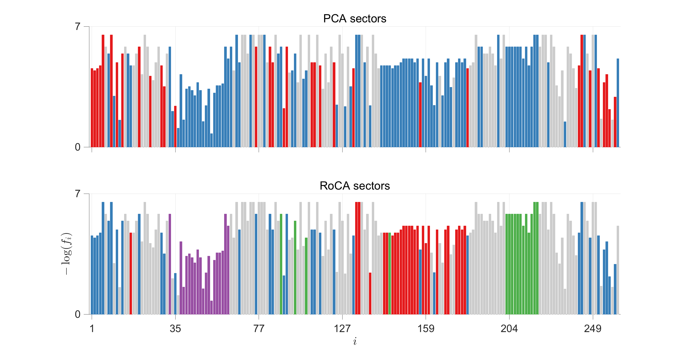 Percentage overlap
%(Supplementary figures 4-6)
calculate_overlap(sec_eig_roca,sec_eig_pca,n_secs_roca,n_secs_pca);
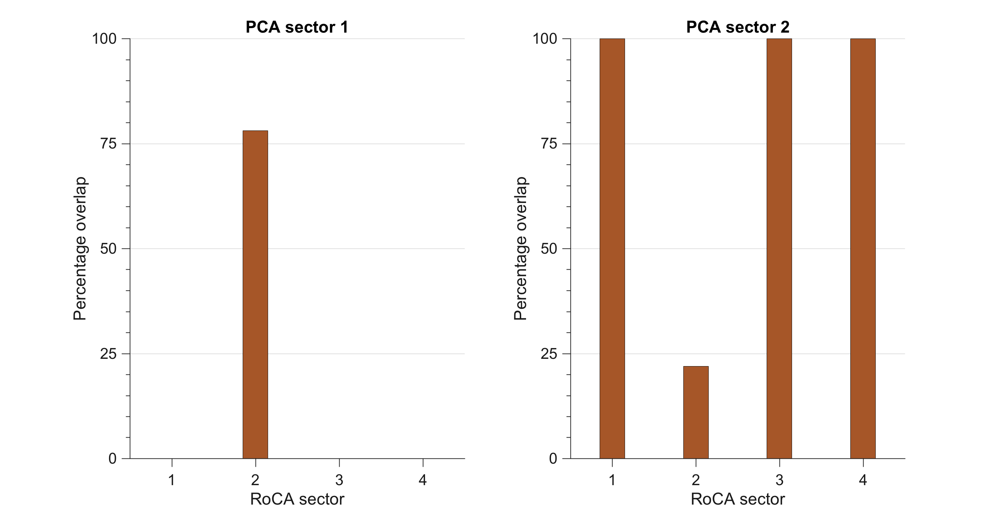 Statistics of RoCA sectors
%Supplementary figure [mc,mean_abs_corr,per_neg_corr,per_pos_corr] = ... stats_sectors(C_hat,sec_eig_roca,n_secs_roca,freq_bin,pos_thresh,neg_thresh);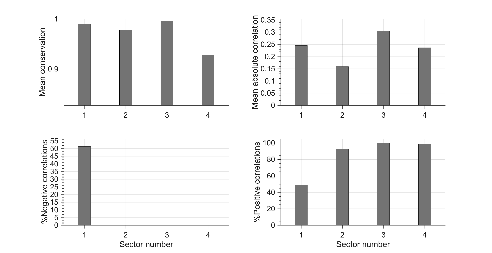
Biplots of eigenvectors
markersize = 12; %Size of circles jitter_roca = 0.005; %Random jitter to avoid super-imposition of data points jitter_pca = 0; %(Supplementary figures 1-3) generate_biplots(PC_roca,sec_eig_roca,alpha,markersize,jitter_roca,'RoCA'); %(Supplementary figures 4-6) generate_biplots(PC_pca,sec_eig_pca,alpha,markersize,jitter_pca,'PCA');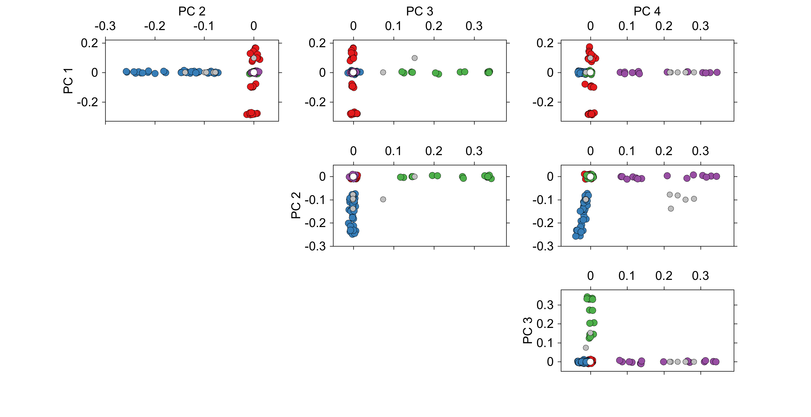 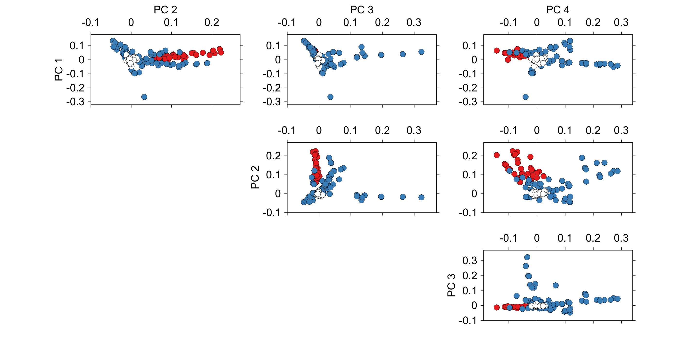
NED calculation plot
%(Supplementary figures 1-3) if run_stat_ind_test == 1 [NED_abs_random,NED_abs_inter,NED_abs_intra] = calculate_NED(B,PC_roca,alpha); figure_NED(alpha,NED_abs_random,NED_abs_inter,NED_abs_intra) else load data_NED_ns4b figure_NED(alpha,NED_abs_random,NED_abs_inter,NED_abs_intra) end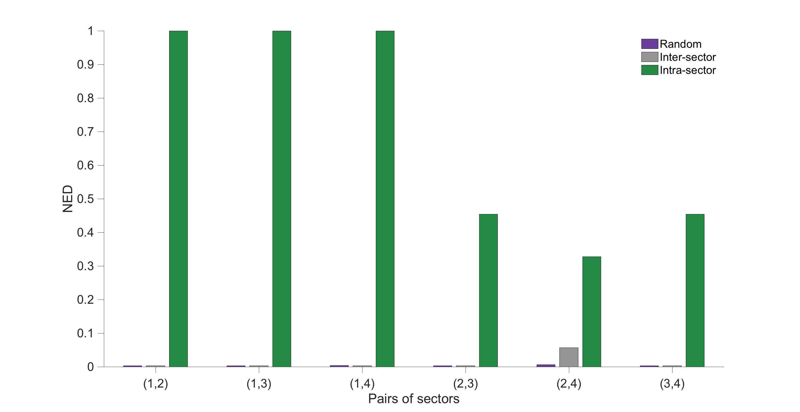
Statistical signficance of biochemical association of RoCA sectors
%Fig. 4 sec_asso_roca = zeros(1,length(biodomain)); %sector associated to a particular biochemical domain pvalue_asso_roca = zeros(1,length(biodomain)); %statistical significance of the sector-biochemical domain association sec_asso_pca = zeros(1,length(biodomain)); %sector associated to a particular biochemical domain pvalue_asso_pca = zeros(1,length(biodomain)); %statistical significance of the sector-biochemical domain association for kk = 1:length(biodomain) [sec_asso_roca(kk),pvalue_asso_roca(kk)] = ... compute_association(biodomain(kk).sites,sec_eig_roca_incl_cs,sec_eig_roca_true,ls,M); [sec_asso_pca(kk),pvalue_asso_pca(kk)] = ... compute_association(biodomain(kk).sites,sec_eig_pca_incl_cs,sec_eig_pca_true,ls,M); end fprintf('\n-----------------------------------------------------------------------------------\n') fprintf('Significance of inferred %s sectors using RoCA\n',protein) fprintf('-----------------------------------------------------------------------------------\n') for kk = 1:length(biodomain) fprintf('Sector %d is associated with %s (P = %.2e).\n',... sec_asso_roca(kk),biodomain(kk).name,pvalue_asso_roca(kk)); end fprintf('\n-----------------------------------------------------------------------------------\n') fprintf('Significance of inferred %s sectors using PCA\n',protein) fprintf('-----------------------------------------------------------------------------------\n') for kk = 1:length(biodomain) fprintf('Sector %d is associated with %s (P = %.2e).\n',... sec_asso_pca(kk),biodomain(kk).name,pvalue_asso_pca(kk)); end
----------------------------------------------------------------------------------- Significance of inferred NS4B sectors using RoCA ----------------------------------------------------------------------------------- Sector 3 is associated with Viral-Rep-Assm (P = 1.88e-13). Sector 4 is associated with NS4B-ATF6beta (P = 1.16e-21). Sector 4 is associated with Oligomerization (P = 1.61e-13). ----------------------------------------------------------------------------------- Significance of inferred NS4B sectors using PCA ----------------------------------------------------------------------------------- Sector 2 is associated with Viral-Rep-Assm (P = 3.77e-04). Sector 2 is associated with NS4B-ATF6beta (P = 1.06e-01). Sector 2 is associated with Oligomerization (P = 2.50e-01).
Data for red spheres in protein crystal structure figures
sec_sites_in_biodomain = cell(1,length(biodomain)); %(Supplementary figures) for kk = 1:length(biodomain) sec_sites_in_biodomain{kk} = biodomain(kk).sites(ismember(biodomain(kk).sites,sec_eig_roca_incl_cs{sec_asso_roca(kk)})); end